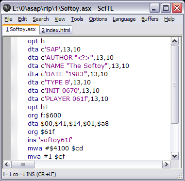

xasm is a free tool for programming old 8-bit computers based on the 6502 processor.
First version of xasm was written in 1998. I needed a cross-assembler that could understand the syntax of Quick Assembler which I used for 8-bit Atari programming before I got a PC. Initially xasm supported the syntax of QA and nothing more. I quickly realized that I could extend the syntax to make it more expressive. This led to xasm 2.0, still in 1998. I added some more features next year. In 2002 I released many versions which contained mostly bugfixes. In 2005 there were some minor enhancements and bug fixes, as well as the whole assembler was rewritten from the x86 assembly language it was initially written in to the D programming language. The rewrite introduced a bug, hopefully fixed in version 3.0.1 released 22nd April 2007.
6502 assembler code is usually full of LDA, STA, LDA, STA sequences. With xasm you can use MVA as a shortcut for LDA/STA pair or even MWA for 16-bit transfers. You can avoid defining labels when you need short jumps, thanks to conditional skip and repeat pseudo-instructions. You can put two instructions that share their argument in one line. These are just some of the features that help you program in a more concise way. Let's look at typical 6502 code (which is valid in xasm):
lda #<dest
sta ptr
lda #>dest
sta ptr+1
ldx #192
do_line
ldy #39
do_byte
lda pattern,y
sta (ptr),y
dey
bpl do_byte
lda #40
clc
adc ptr
sta ptr
bcc skip
inc ptr+1
skip
dex
bne do_line
Using xasm features this code can be rewritten to:
mwa #dest ptr
ldx #192
do_line
ldy #39
mva:rpl pattern,y (ptr),y-
lda #40
add:sta ptr
scc:inc ptr+1
dex:bne do_line
xasm is a command-line tool so you additionally need a general-purpose text editor. I use SciTE. Syntax highlighting definition for it is included with xasm. To install it, copy xasm.properties to the SciTE directory, select Options / Open Global Options File, type import xasm at the end and save the global configuration file.

For other systems, such as GNU/Linux and MacOS X, install the latest D compiler and compile xasm from source code.
Need a good decompression routine for 6502? See my inflate routine.